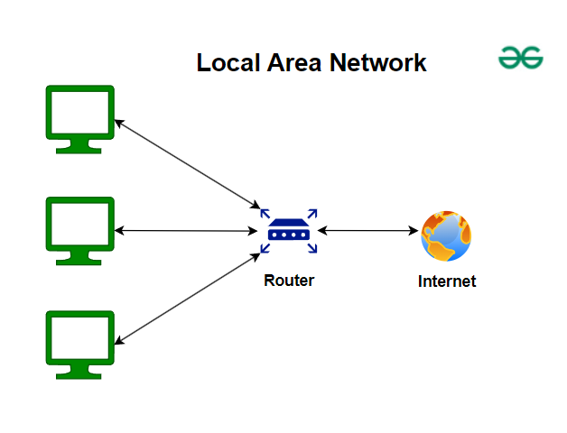

MY IT PROJECTS / RECENT PROJECTS


Klien: PT American Standard Indonesia (LIXIL Group). Developed security risk prediction models (BERT, XLM-RoBERTa), security implementation, data protection, and interactive web dashboard.
Live Web App


Client: PT Square Gate One. Identified assets & threats, evaluated risk patterns, and structured mitigations mapped to ISO/IEC 27005:2018, OJK, BI, and PCI DSS standards.

Digitalized manual ink inventory tracking into a structured web system for IT operations at PT American Standard Indonesia. Features include inventory data management, forms, navigation, and operational workflow.
Live Web App
Built a structured digital system for managing IT asset disposal workflows at PT American Standard Indonesia. Includes asset inspection, classification, disposal forms, and data presentation.
Live Web App


PT Sinergi Cahaya Utama Indah (Gedung SCUI). Developed React.js affiliate dashboard, admin panel, referral system, dynamic pricing, and mobile-first landing page.
Visit Qurban Tanpa Batas


Developed a travel app using Android Studio showcasing Kalimantan tourism spots, booking features, and travel packages.
View on GitHub


Installed LAN network infrastructure at RJB office, including cable management, RJ-45 crimping, patch panel setup, and router/switch configuration.


Created a traffic light system simulation using TinkerCAD logic gates and timers to mimic real-world transitions.
SOCIAL PROJECTS / COMMUNITY IMPACT


.jpg)
Part of the creative team, supporting logo and branding design for a local Moringa chips business.


Designed branding and managed digital marketing for a student fashion brand during an entrepreneurship program.


Created a personal media platform focused on car reviews, news, and the automotive industry. Managed TikTok & Instagram content.